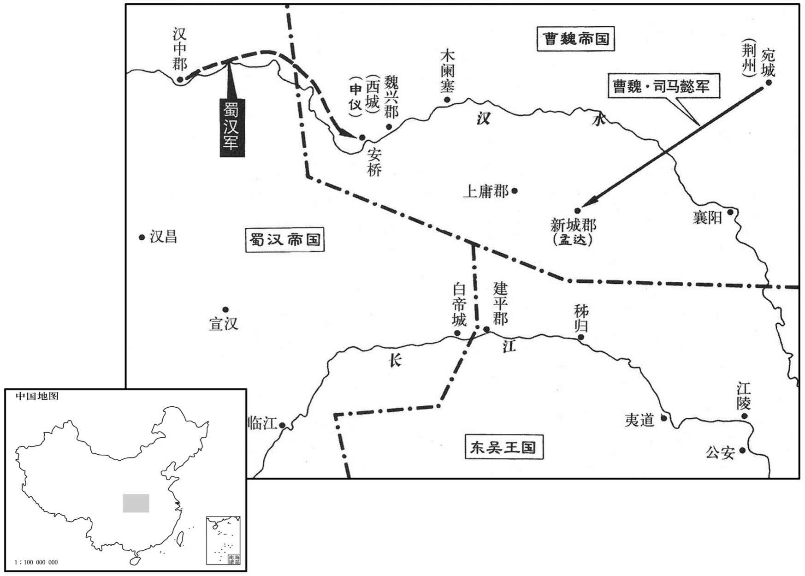

公元227年资治通鉴：本年记事、原文与白话对照
按原书编年位置阅读；追叙和史论不等于本年发生的事件。白话采用所据译本，缺译不以生成译文补齐。
卷70 · 本年记事
公元227年 · 魏烈祖明皇帝太和元年
太和元年〔（丁未、二二七）〕
上传原文的注释括号有异常，字符原样保留；无法可靠划分的段落默认全文显示。
本年事件索引（现代整理）
- 胡综与周鲂擒获鄱阳叛军首领彭绮
- 孙资判断彭绮不足以撼动吴国，魏未乘机伐吴
- 王朗劝曹叡停止营建宫室，先务农备战
- 诸葛亮率军驻汉中，向刘禅上《出师表》陈述危局
- 诸葛亮主张宫府同法，依功过公正赏罚
- 诸葛亮举荐郭攸之、费祎、董允及向宠辅佐刘禅
- 诸葛亮劝刘禅亲贤远佞，信任忠直之臣
- 诸葛亮追述三顾之恩与受托孤重任
- 诸葛亮陈述北伐志向，愿以兴复汉室报答先帝
- 诸葛亮称赞姚軎广荐文武人才
- 孙资劝曹叡据险守边、休养待机，曹叡停止伐蜀
- 魏国复铸五铢钱，以制止谷帛交易中的欺诈
- 魏国开始在洛阳营建宗庙
- 司马懿都督荆、豫诸军，镇守宛城
- 曹叡立毛氏为皇后，废黜原配虞氏
- 锺繇倡议恢复肉刑，曹叡因战事未决暂缓施行
- 韩当去世，其子韩综率家属部曲降魏
- 司马懿趁孟达犹豫不决，急行围攻新城

本年形势与背景参考图
春，吴解烦督胡综、〔据综传，刘备下白帝，权以见兵少，使综料诸县，得六千人，立解烦两部督。督，督将也。〕番阳太守周鲂击彭绮，生获之。〔番，蒲何翻。鲂，音房。〕
春季，吴解烦督胡综、番阳太守周鲂讨伐彭绮，将其生擒。
初，绮自言举义兵，为魏讨吴，〔为，于伪翻。〕议者以为因此伐吴，必有所克。帝以问中书令太原孙资，〔沈约志：魏武帝为王，置秘书令，典尚书奏事。文帝黄初初，改为中书令，置监。〕资曰：「番阳宗人，前后数有举义者，〔数，所角翻。〕众弱谋浅，旋辄乖散。昔文皇帝尝密论贼形势，言洞浦杀万人，得船千数，数日间，船人复会；〔事见上卷文帝黄初三年。〕江陵被围历月，〔被，皮义翻。〕权裁以千数百兵住东门，而其土地无崩解者；是其法禁上下相维之明验也。以此推绮，惧未能为权腹心大疾也。」至是，绮果败亡。
当初，彭绮自称举兵起义，为魏征吴，有些大臣建议，借机攻吴，一定会成功。明帝询问中书令太原人孙资，孙资说：“番阳的强宗大族，前后数次起事，但人数不多，见识浅陋，很快就都散了。以前文皇帝曾详细分析过吴的形势，说我军在洞浦杀吴军民一万人，缴获一千余艘战船，可是在数日之间，吴军又把人和船聚集到一起；江陵被围数月，孙权仅率一千几百名士兵驻在江陵东门，而吴地并未发生大的动乱；这是他们法纪严密，上下共相维护的明显证据。以此推论经彭绮的起事，恐怕不会成为孙权的心腹之患。”到这时，彭绮果然失败了。
二月，立文昭皇后寝园于邺。〔甄后赐死于邺，因葬焉。〕王朗往视园陵，见百姓多贫困，而帝方营修宫室，朗上疏谏曰：「昔大禹欲拯天下之大患，故先卑其宫室，俭其衣食；〔论语：孔子曰：禹卑宫室，菲饮食，而尽力乎沟洫。〕句践欲广其御儿之疆，亦约其身以及家，俭其家以施国；〔句，音钩。国语：句践既获成于吴，其地北至子御儿。非其身之所种则不食；非其夫人之所织则不衣。十年不收于国，卒以报吴。御儿，吴、越分界之所，今嘉兴府即其地，今有语儿乡。施，弋智翻。〕汉之文、景，欲拻弘祖业，故割意于百金之台，昭俭于弋绨之服；〔事见十五卷汉文帝后七年。〕霍去病中才之将，犹以匈奴未灭，不治第宅。〔事见十九卷汉武帝元狩四年。治，直之翻。〕明恤远者略近，事外者简内也。今建始之前，足用列朝会；崇华之后，足用序内官；华林、天渊，足用展游宴。〔建始、崇华二殿，皆在洛阳北宫。水经注：谷水径洛阳故城北，东历大夏门下，枝分渠水，东入华林园，又东为天渊池。世语曰：魏武自汉中还洛阳，起建始殿，近汉濯龙祠。朝，直遥翻。华，如字。〕若且先成象魏，〔象魏，观阙也。象者，法象也；魏者，高巍也。〕修城池，其余一切须丰年，专以勤耕农为务，习戎备为事，则民充兵强而寇戎宾服矣。」
二月，在邺城为文昭皇后设立陵园，王朗前往陵园巡视，见那里的百姓多数很贫困，而明帝当时正在修建宫室，王朗上书劝谏说：“从前大禹要拯救天下的人民免于灾难，所以先使自己的宫室尽量简陋，衣食尽量节俭；越王勾践为拓展御儿的疆界，也约束自己和家人，节俭家用补充国用；汉朝的文帝、景帝，为了发扬祖先的事业，停修了自己很喜欢、而且只需要百金的楼台，只穿很俭朴的粗厚衣；霍去病仅是个中等才能的将领仍认为匈奴尚未消灭，不置宅邸。这些都说明，有远虑者，近时要简略；要对付外敌，必须要内部简朴。目前，建始殿前面，足够大臣列班上朝；崇华殿后面，足够内官侍候问安；华林园和天渊池，足够用于宴会和游乐。不妨先建成宫廷外的门阙，修筑好城池，其余的工程等年景好的时候再兴建。当前应当专劝民农耕为主要工作，整顿军队为紧迫任务。在人民富裕、军队强大以后，敌人自然会前来归服。”
三月，蜀丞相亮率诸军北驻汉中，使长史张裔、参军蒋琬统留府事。临发，上疏曰：「先帝创业未半而中道崩殂，今天下三分，益州疲敝，此诚危急存亡之秋也。然侍卫之臣不懈于内，忠志之士忘身于外者，盖追先帝之殊遇，欲报之于陛下也。诚宜开张圣听，以光先帝遗德，恢弘志士之气；不宜妄自菲薄，引喻失义，以塞忠谏之路也。〔塞，悉则翻。〕
三月，蜀汉丞相诸葛亮率领各路军队向北挺进，驻军汉中，以长史张裔、参军蒋琬留下处理丞相府的各项政务。出发前，诸葛亮上书说：“先皇帝开创大业，刚刚见些成效，却中途溘然长逝了。如今的天下分成三个政权鼎足而立，要算益州的蜀国最为贫穷困乏，这正是一个生死存亡的时刻。然而身边近臣仍能兢兢业业、毫不怠懈地在朝内尽其职守；忠勇将士舍身奋战在沙场，出生入死，是因为追念先皇帝的知遇之恩，想要全力报答给陛下。陛下正应虚心听取各方面意见，发扬光大先皇帝遗下的威德，振奋有志之士的气节；而不应自己轻视自己，讲出不合道理的话来，以致阻塞忠臣进谏的渠道。
宫中、府中，俱为一体，〔蜀后主建兴元年命亮开府治事。所谓府中，盖丞相府也。〕陟罚臧否，不宜异同。〔否，皮鄙翻。〕若有作奸犯科，〔科，律条也。〕及为忠善者宜付有司论其刑赏，以昭陛下平明之理，不宜偏私，使内外异法也。〔观孔明所谓两不宜，则后主之为君可知矣。〕
“宫廷和相府，是一个整体，提升、贬黜、表彰、指责，不应有什么区别。如果有触犯法纪的行为，或尽忠立功的表现，应该让有关部门按规定给予处罚、奖赏，以显示陛下公允、明察，不能有偏私之心，使宫廷内外执法不统一。
侍中、郎郭攸之、费祎、董允等，〔时攸之、祎为侍中，允为黄门侍郎。费，父沸翻。祎，吁韦翻。〕此皆良实，志虑忠纯，是以先帝简拔以遗陛下。〔遗，于季翻。〕愚以为宫中之事，事无大小，悉以咨之，然后施行，必能裨补阙漏，有所广益。将军向宠，〔向，式亮翻，姓也。〕性行淑均，〔行，下孟翻。〕晓畅军事，试用于昔日，先帝称之曰能，是以众议举宠为督。愚以为营中之事，悉以咨之，必能使行陈和睦，优劣得所。〔行，户刚翻。陈，读曰阵。〕
“侍中郭攸之、费、侍郎董允等人，都是善良诚实、思想纯正的忠臣，所以先皇帝特意选拔他们留下来辅佐陛下。我以为宫廷中事务，不论大小，都应先和他们商议，然后再付诸实施，这样一定能弥补缺漏，得到更多的好处。将军向宠，品行平和公正，通晓军事，在以前经过考验，先皇帝答赞他很有才能，所以被大家推举为掌管禁兵的中部督。我认为各项军务，都应征求他的意见，必定会令将士和睦，使才智出众和能力较差的人都能各得其所。
亲贤臣，远小人，此先汉所以兴隆也；亲小人，远贤臣，此后汉所以倾颓也。〔远，于愿翻。〕先帝在时，每与臣论此事，未尝不叹息痛恨于桓、灵也。侍中、尚书、长史、参军，此悉端良、死节之臣，愿陛下亲之，信之，则汉室之隆，可计日而待也。
“亲近贤臣，疏远小人，这是前汉得以兴盛的原因；亲近小人，疏远贤臣，这是后汉衰败的根由。先皇帝在世，每次与我谈起这些，没有一次不对桓帝、灵帝时代的政治腐败痛心疾首。侍中郭攸之、费，尚书陈震，长史张裔，参军蒋琬，都是端正善良、能以死报国的忠臣，希望陛下亲近他们，信任他们，则汉室的兴盛，将指日可待。
臣本布衣，躬耕南阳，苟全性命于乱世，不求闻达于诸侯。先帝不以臣卑鄙，猥自枉屈，三顾臣于草庐之中，谘臣以当世之事；〔事见六十五卷汉献帝建安十二年。〕由是感激，遂许先帝以驱驰。后值倾覆，受任于败军之际，奉命于危难之间，〔事见上卷文帝黄初四年。难，乃旦翻。〕尔来二十有一年矣。〔自建安十二年至是年，凡二十一年。〕先帝知臣谨慎，故临崩寄臣以大事也。
“我本是一介平民，在南阳亲自耕作，本来只想在风雨飘摇的动荡年代保全性命，从未想通达贵显，名扬天下。先皇帝不嫌弃我地位卑下，屈尊俯就，三次往茅庐相访，向我询问天下形势，使我感激万分，这才答应为先皇帝奔走效命。后来军事上遇到挫折，在败军之际承担重任，在危难时刻接受使命，从那时至今，已整整二十一年了。先皇帝深知我行事谨慎，因此在临终前托付国家大事。
受命以来，夙夜忧叹，死托付不效，以伤先帝之明。故五月渡泸，〔水经注：犍为朱提县西八十里，有泸津水，广六七百步，深十数丈，多瘴气，鲜有行者。益州记曰：泸水两峰有杀气，暑月旧不行，故武侯以夏渡为难。贤曰：泸水，一名若水，出旄牛徼外，经朱提至僰道入江，在今巂州南。特有瘴气，三月、四月经之必死，五月以后行者得无害。故诸葛亮表云「五月渡泸」，言其艰苦也。〕深入不毛。〔地不生草木为不毛。〕今南方已定，甲兵已足，当奖率三军，北定中原，庶竭驽钝，〔驽，音奴。〕攘除奸凶，兴复汉室，还于旧都，此臣所以报先帝，而忠陛下职分也。〔分，扶问翻。〕至于斟酌损益，进尽忠言，则攸之、祎、允之任也。愿陛下托臣以讨贼兴复之效，不效，则治臣之罪以告先帝之灵，〔治，直之翻。〕责攸之、祎、允等之慢以章其咎。陛下亦宜自谋，以谘诹善道，〔诹，遵须翻。谘事为诹。〕察纳雅言，〔雅，正也。〕深追先帝遗诏，臣不胜受恩感激。今当远离，〔胜，音升。离，力智翻。〕临表涕零，不知所言。」遂行，屯于沔北阳平石马。〔水经注：沔水径白马戍南，谓之白马城，一名阳平关。又有白马山，山石似马，望之逼真。后魏分沔阳置嶓耱县，属华阳郡；隋罢郡，置白马镇于古诸葛城，县治不改；大业二年，改嶓耱为西县；县，唐属梁州。〕
“自从接受先皇帝遗命以来，日夜忧虑叹息，唯恐辜负重托，有损先皇帝知人之明。于是五月渡过泸水，深入到荒凉的不毛之地。如今南方已经平定，军力弃足，正应当激励将士，统率三军北定中原，我愿竭尽平庸之力，铲除奸贼，恢复大汉皇室，重返故都，这正是我报答先皇帝，效忠陛下的本分。至于处理政事，掌握分寸，进纳忠言，则是郭攸之、费、董允等人的职责。希望陛下将讨伐国贼、复兴大汉朝廷的重任交给我，若无成效，请您治罪，以告先皇帝在天之灵；如果郭攸之、费、董允疏忽失职，就责备追究他们的过错。陛下自己也应慎重考虑，征询和选择妥善的治国方略，访察、采纳好的建议，真正遵循先皇帝遗训。如此则臣下我就受恩不浅，感激不尽了。现在将要远离陛下，在写这份表章时激动得泪流不止，不知该说些什么。”于是率军出发，驻屯在沔水北岸的阳平石马。
亮辟广汉太守姚軎为掾，〔軎，音冑。掾，丞相掾也，音于绢翻。〕軎并进文武之士，亮称之曰：「忠益者莫大于进人，进人者各务其所尚。今姚掾并存刚柔以广文武之用，可谓博雅矣。愿诸掾各希此事以属其望。」〔布，慕也。郑氏周礼注：属，合也。〕
诸葛亮征召广汉太守姚为丞相掾，姚同时推荐了很多文武官员，诸葛亮称赞他说：“对国家效忠进益，莫过于举荐人才，但推荐者往往根据自己的崇尚。而今掾属姚举荐官员，却能刚柔并济地同时推举文官武将，以备国家之用，可称广博典雅。希望各位掾属都以姚为榜样，不负我对你们的期望。”
帝闻诸葛亮在汉中，欲大发兵就攻之，以问散骑常侍孙资，资曰：「昔武皇帝征南郑，取张鲁，阳平之役，危而后济，〔事见六十七卷建安二十年。〕又自往拔出夏侯渊军，〔事见六十八卷建安二十四年。〕数言『南郑直为天狱，中斜谷道为五百里石穴耳，』言其深险，喜出渊军之辞也。又，武皇帝圣用兵，察蜀贼栖于山岩，视吴虏窜于江湖，皆桡而避之，〔数，所角翻。斜，余遮翻。谷，音浴。桡，如教翻，曲也，屈也。〕不责将士之力，不争一朝之忿，诚所谓见胜而战，知难而退也。今若进军就南郑讨亮，道既险阻，计用精兵及转运镇守南方四州，遏御水贼，凡用十五六万人，〔四州，荆、徐、扬、豫也。〕必当复更有所发兴，〔复，扶又翻。〕天下骚动，费力广大，此诚陛下所宜深虑。夫守战之力，力役参倍。但以今日见兵〔见，贤遍翻。〕分命大将据诸要险，威足以震摄强寇，镇静疆埸，〔埸，音亦。〕将士虎睡，百姓无事。数年之间，中国日盛，吴、蜀二虏必自罢敝。」〔罢，读曰疲。〕帝乃止。
明帝得到诸葛亮抵达汉中的报告，准备大举出兵向诸葛亮发起进攻。他就这件事询问散骑常侍孙资，孙资说：“以前武皇帝攻打南郑，征讨张鲁，在阳平之战中，身临险境，而后才勉强取胜，后来又亲自率兵救出夏侯渊的军队。他曾多次说：‘南郑真像天上的监狱，中间的斜谷道简直是五百里石穴。’由于那里的地形险恶，他庆幸救夏候渊的军队脱离险境，才说了上面的话。再者，武皇帝用兵如神，深知蜀贼栖息在崇山峻岭之间，吴匪流窜于江河大湖之上，因而加以容忍，暂时避开，不强迫将士们死打硬拼，不争一朝一夕的气忿，这就是所谓有可胜的机会便战，无取胜的把握便退的战略。如果现在进兵南郑讨伐诸葛亮，不但道路艰险，还要调集精兵 ，转运物资，再加上镇守南方的荆、徐、扬、豫四州，防止吴的水上进犯，共需兵力十五六万人，这样，就还需要征发更多的兵役，调集更多的物资，全国都会因此骚动起来，耗费巨大，这的确需要陛下深思。防守和进攻相比，仅需二分之一的力量。但以我军现有的兵力，份派重要将领据守各险关要隘，威力即足以使强敌震恐，使我国边境安然无事，将士可以养精蓄锐，百姓也不受劳役之苦。数年之后，我国国力强，吴、蜀二敌必然自己疲惫下去。”明帝就停止了攻击计划。
初，文帝罢五铢钱，〔事见六十九卷黄初元年。〕使以谷帛为用，人间巧伪渐多，竞湿谷以要利，薄绢以为市，虽处以严刑，不能禁也。〔要，一遥翻。处，昌吕翻。〕司马芝等等举朝大议，〔朝，直遥翻。〕以为：「用钱非徒丰国，亦所以省刑，今不若更铸五铢为便。」夏，四月，乙亥，复行五铢钱。
当初，帝废止了五铢钱，以粮食和丝绢代替钱币。社会上弄巧作假的理解越来越多，争相把粮食搞湿以获利，用很薄的丝绢买卖东西，虽然严刑处罚，仍不能禁止。司马芝等人在朝廷上展开讨论，认为：“以钱作贷币不仅仅为了增加国家的收入，还可以减省刑罚，现在不如恢复铸造五铢钱更为有利。”夏季，四月，乙亥（初十），恢复使用五铢钱。
甲申，初营宗庙于洛阳。
甲申（十九日），开始在洛阳营建宗庙。
六月，以司马懿都督荆、豫州诸军事，率所领镇宛。〔宛，于元翻。〕
六月，任命司马懿都督荆、豫二州诸军事，率自己所属军队镇守宛城。
冬，十二月，立贵嫔河内毛氏为皇后。〔后，典虞工卒毛嘉之女也。〕初，帝为平原王，纳河内虞氏为妃；及即位，虞氏不得立为后，太皇卞太后慰勉焉。虞氏曰：「曹氏自好立贱，未有能以义举者也。〔武帝立卞后，文帝立郭后，皆非正室。好，呼到翻。〕然后职内事，君听外政，〔礼记昏义：古者，天子后立六宫、三夫人、九嫔、八十一御妻，以听天下之内治，以明章妇顺，故天下内和而家理。天子立六官、三公、九卿、二十七大夫、八十一元士，以听天下之外治，以明章天下之男教，故外和而国治。其道相由而成；苟不能以善始，未有能令终者也，殆必由此亡国丧祀矣！」〔丧，息浪翻。〕虞氏遂绌还邺宫。〔绌，敕律翻。〕
两版字句有差异，建议核对原文。
冬季，十二月，立贵嫔河内人毛氏为皇后。以前，明帝为平原王时，娶河内人虞氏为妃；即位为帝以后，虞氏没有被立为皇后，太皇卞太后因此而安慰和劝抚她。虞氏说：“曹氏家族本来就好立地位低贱、没有按照礼义推举的人。然而皇后管理宫内事务，国君负责朝廷政事，内外相辅而成；如果没有好的开端，就决不会有好的结果，恐怕一定会因此而亡国灭宗了。”由于卞太后也是低贱出身，虞氏因此被贬回邺城的皇宫。
初，太祖、世祖皆议复肉刑，以军事不果。〔太祖议复肉刑事见六十六卷汉献帝建安十八年。其后文帝临飨群臣，诏谓大理欲复肉刑，此诚圣王之法，公卿当共善议。议未定，会有军事，复寝。〕及帝即位，太传锺繇上言：「宜如孝景之令，其当弃市欲斩右趾者，许之；其黥、劓、左趾、宫刑者，〔劓，鱼器翻。〕自如孝文易以髡笞，可以岁生三千人。」诏公卿已下议，司徒朗以为：「肉刑不用已来，历年数百；今复行之，恐所减之文未彰于万民之目，而肉刑之问已宣于寇雠之耳，非所以来远人也。今可按繇所欲轻之死罪，使减死髡刑，嫌其轻者，可倍其居作之岁数，〔魏制，髡刑居作五岁。〕内有以生易死不訾之恩，外无以刖易釱骇耳之声。」〔訾，津私翻。釱，大计翻。在颈曰钳，在足曰釱。臣瓒曰：汉文帝除肉刑，以完易髡，以笞代劓，以釱左右趾代刖。〕议者百余人，与朗同者多。帝以吴、蜀未平，且寝。
当初，魏武帝、文帝都议论恢复肉刑，因为不断有战争而未能实施。明帝即位，太傅钟繇建议：“应仿汉景帝的命令，应当斩首示众的人如果自愿以砍去右脚代替，应允许；对黥面、割鼻、砍左脚、宫刑等刑罚，仍然按照汉文帝的法令，以剃发和鞭打代替，这样一年可以使三千人保留性命。”明帝下诏要公卿及以下的臣僚讨论，司徒王朗认为：“不用肉刑至今已经数百年了，现在恢复，恐怕所减刑罚的好处还未使人民见到，而恢复肉刑的恶名已经传到贼寇的耳朵里，这不是招抚远方人士的办法。现在不妨根据钟繇减免死刑的建议，将死刑减为剃发做苦工，如果认为这样的处罚太轻了，可以延行他们服刑的时间。如此，对内有以生代死的广大无量的恩德，对外则没有以砍脚代替脚镣的骇人听闻的恶名。”讨论的人有百余名，多数同意王朗的意见。明帝因为吴、蜀两国尚未平定，也就把此事放下子。
是岁，吴昭武将军韩当卒，其子综淫乱不轨，惧得罪，闰月，将其家属、部曲来奔。〔为韩综为吴所禽张本。〕
这一年，吴昭武将军韩当去世，他的儿子韩综道德败坏，不守法令，害怕被治罪，闰十二月，率领家属和宗族军队来投魏。
初，孟达既为文帝所宠，又与桓阶、夏侯尚亲善；及文帝殂，阶、尚皆卒，〔卒，子恤翻。〕达心不自安。诸葛亮闻而诱之，〔诱，音酉。〕达数与通书，阴许归蜀；〔数，所角翻。〕达与魏兴太守申仪有隙，〔魏兴，蜀之西城郡也，文帝曰魏兴。〕仪密表告之。达闻之，惶惧，欲举兵叛；司马懿以书慰解之，达犹豫未决，懿乃潜军进讨。诸将言：「达与吴、汉交通，宜观望而后动。」懿曰：「达无信义，此其相疑之时也。当及其未定促决之。」乃倍道兼行，八日到其城下。吴、汉各遣偏将向西城安桥、木阑塞以救达，〔水经注：魏兴安阳县西北，有高桥溪口，文水入汉之口也。汉水又东径西城县故城南，又东径木兰塞南，右岸有城，名陵城，周回数里；左岸垒石数十行，重垒数十里，中谓之木兰塞，蜀军救孟达之所。〕懿分诸将以距之。初，达与亮书曰：「宛去洛八百里，〔司马懿时屯宛。〕去吾一千二百里。闻吾举事，当表上天子，比相反复，一月间也，〔上，必寐翻。〕则吾城已固，诸军足办。吾所在深险，司马公必不自来；诸将来，吾无患矣。」及兵到，达又告亮曰：「吾举事八日而兵至城下，何其神速也！」
当初，孟达受文帝宠信，又和桓阶、夏侯尚关系密切，文帝去世后，桓阶和夏侯尚也相继故去，孟达心中忧虑不安。诸葛亮知道后，便引诱孟达，孟达和诸葛亮多次通信，秘密答应归蜀；孟达和魏兴太守申仪有隔阂，申仪秘密上表告发了孟达。孟达听说后，惊惶恐惧，企图举兵反叛；司马懿写信安慰劝解了他，孟达因此犹豫不决。司马懿则秘密率军进讨，部下将领说：“孟达已和吴、蜀互相串通，我们应先观察他的动向，然后再采取行动。”司马懿说：“孟达是个不讲信义的人，这时正在怀疑观望。我军应趁他尚未作出决定，迅速加以解决。”于是司马懿率军急速行军，日夜兼程，仅用八天就抵达孟达的新城城下。吴、蜀各派将领进兵西城的安桥、木兰塞援救孟达，司马懿则派将领进兵西城的安桥、木兰塞援救孟达，司马懿则派将领分路拦阻。当初，孟达写信给诸葛亮说：“宛城距洛阳八百里，距我所在新城一千二进里。听说我起兵，自然要向明帝报告，连续往返，要用一个月的时间，那时我的城池已防守坚固，各军也作好充分的准备。我的防区地形险要，司马懿肯定不会亲自前来，其他将领来，不会对我造成威害。”及至司马懿的军队兵临城下，孟达又写信对诸葛亮说：“我起兵仅八天，司马懿便兵临城下，怎么如此神速！”